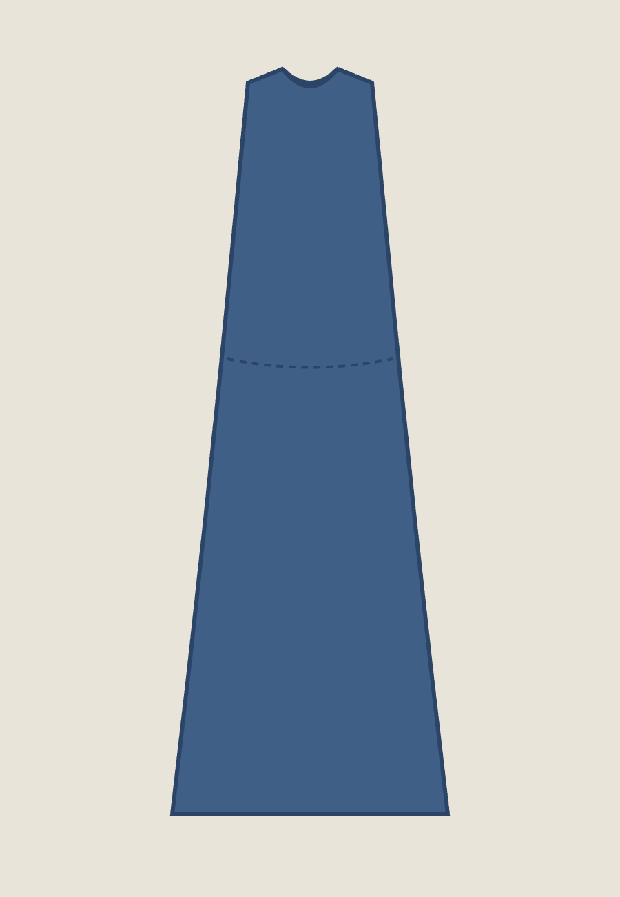

<!doctype html>
<html lang="en">
<head>
  <meta charset="utf-8" />
  <meta name="viewport" content="width=1080" />
  <title>Restitch ad frame</title>
  <link rel="preconnect" href="https://fonts.googleapis.com" />
  <link rel="preconnect" href="https://fonts.gstatic.com" crossorigin />
  <link href="https://fonts.googleapis.com/css2?family=Young+Serif&family=Instrument+Sans:wght@400;500;600;700&family=IBM+Plex+Mono:wght@500;600&display=swap" rel="stylesheet" />
  <style>
    :root { --tissue:#EFE3CF; --sheet:#FBF5EA; --ink:#2A211A; --muted:#6B5644; --line:#D8C7AA; --red:#B23A22; --red-soft:#F2B6A6; --blue:#2F5D8A; --grid:rgba(47,93,138,.08);
      --display:"Young Serif", Georgia, serif; --sans:"Instrument Sans", system-ui, sans-serif; --mono:"IBM Plex Mono", ui-monospace, monospace; }
    * { box-sizing: border-box; }
    html, body { margin: 0; width: 1080px; height: 1350px; overflow: hidden; background-color: #EFE3CF; }
    .f { position: relative; width: 1080px; height: 1350px; padding: 72px 80px 64px; color: var(--ink); font-family: var(--sans);
      background-color: var(--tissue); background-image: linear-gradient(var(--grid) 2px, transparent 2px), linear-gradient(90deg, var(--grid) 2px, transparent 2px); background-size: 36px 36px; background-position: -1px -1px;
      display: flex; flex-direction: column; }
    .f.paper { background-color: var(--sheet); }
    .top { display: flex; justify-content: space-between; align-items: center; }
    .mark { position: relative; font: 400 48px/1 var(--display); color: var(--ink); padding-bottom: 14px; }
    .mark::after { content: ""; position: absolute; left: 0; right: 18%; bottom: 0; border-top: 3px dashed var(--red); }
    .tag { font: 600 28px var(--mono); letter-spacing: 0.08em; text-transform: uppercase; color: var(--blue); }
    .art { flex: 1; display: flex; align-items: center; justify-content: center; min-height: 0; }
    h1 { margin: 0; font: 400 100px/1.02 var(--display); letter-spacing: -0.015em; }
    h1 em { font-style: normal; color: var(--red); }
    .sub { margin: 26px 0 0; font: 500 34px/1.3 var(--sans); color: var(--muted); max-width: 880px; }
    .foot { display: flex; justify-content: space-between; gap: 24px; margin-top: 40px; padding-top: 26px; border-top: 3px dashed var(--red); font: 500 28px var(--sans); color: var(--muted); }
    .chip { display: inline-flex; align-items: center; gap: 14px; padding: 16px 24px; background: var(--sheet); border: 2px solid var(--line); border-radius: 2px; font: 600 30px var(--mono); letter-spacing: 0.04em; text-transform: uppercase; color: var(--ink); }
    .chip b { font-weight: 600; color: var(--blue); }
    .chip.on { background: var(--red); border-color: var(--red); color: #fff; }
    .chip.on b { color: #fff; }
    .chip i { width: 30px; height: 30px; display: inline-block; border: 2px solid var(--ink); }
    .src { font: 500 28px var(--sans); color: var(--muted); margin-top: 18px; }
    .panel { background: var(--ink); color: var(--tissue); padding: 56px 60px 52px; border-radius: 2px; }
    .panel .src { color: var(--tissue); }
    .panel .lbl { font: 600 28px var(--mono); letter-spacing: 0.08em; color: var(--red-soft); }
  </style>
</head>
<body>
  <div id="root"></div>
  <script>
    /* line-drawn garment: ink outline, blue grainline arrow, optional red dashed cut line */
    var dress = function (fill, cut) {
      return '<path d="M196 40 L246 18 Q290 62 334 18 L384 40 L404 270 Q446 640 494 1010 L86 1010 Q134 640 176 270 Z" fill="' + fill + '" stroke="#2A211A" stroke-width="5" stroke-linejoin="round"/><path d="M246 18 Q290 72 334 18" fill="none" stroke="#2A211A" stroke-width="5"/>' +
        '<path d="M290 140 V 900 M272 168 L290 140 L308 168 M272 872 L290 900 L308 872" fill="none" stroke="#2F5D8A" stroke-width="5"/>' +
        (cut ? '<path d="' + cut + '" fill="none" stroke="#B23A22" stroke-width="6" stroke-dasharray="18 12"/>' : '');
    };
    var F = {
      1: { tag: "Save money", art:
        '<svg width="900" height="640" viewBox="0 0 900 640"><g transform="translate(60,20) scale(0.6)">' + dress("#FBF5EA", "M150 640 Q290 664 430 640") + '</g>' +
        '<path d="M300 140 L470 110" stroke="#2A211A" stroke-width="3"/><g transform="translate(470,60) rotate(-8)"><path d="M0 40 L60 0 L330 0 L330 170 L60 170 L0 130 Z" fill="#FBF5EA" stroke="#2A211A" stroke-width="3"/><circle cx="40" cy="85" r="14" fill="none" stroke="#2A211A" stroke-width="3"/><text x="90" y="80" font-family="IBM Plex Mono" font-weight="600" font-size="32" fill="#2F5D8A" letter-spacing="3">THRIFT</text><text x="90" y="138" font-family="Young Serif" font-size="50" fill="#2A211A">find</text></g>' +
        '<g transform="translate(500,330)"><rect width="330" height="200" fill="#FBF5EA" stroke="#B23A22" stroke-width="4" stroke-dasharray="14 10"/><text x="30" y="80" font-family="IBM Plex Mono" font-weight="600" font-size="32" fill="#B23A22" letter-spacing="3">PLAN</text><text x="30" y="160" font-family="Young Serif" font-size="72" fill="#B23A22">$0</text></g></svg>',
        h: 'The find was cheap.<br><em>The plan is free.</em>', sub: 'Photo in, three flips out: no-sew, hand, machine.' },
      2: { tag: "No machine? Fine", art:
        '<div style="display:flex;flex-direction:column;gap:26px;align-items:flex-start"><span class="chip on"><b>No-sew</b> · knot, pin, snap</span><span class="chip"><b>Hand</b> · needle and thread</span><span class="chip"><b>Machine</b> · when you\'re ready</span></div>',
        h: 'Every read has a <em>no-sew</em> flip.', sub: 'No pattern to buy. No machine needed to start.' },
      3: { tag: "Your fit", paper: true, art:
        '<svg width="920" height="560" viewBox="0 0 920 560"><g transform="rotate(-6 460 120)"><rect x="20" y="70" width="880" height="100" fill="#EFE3CF" stroke="#2A211A" stroke-width="3"/>' +
        Array.from({length: 23}, function (_, i) { var x = 50 + i * 37; return '<line x1="' + x + '" y1="70" x2="' + x + '" y2="' + (i % 5 === 0 ? 125 : 102) + '" stroke="#2A211A" stroke-width="3"/>'; }).join("") +
        '<path d="M60 150 H 860" stroke="#B23A22" stroke-width="3" stroke-dasharray="12 9"/></g><g font-family="Instrument Sans" font-size="36" fill="#2A211A"><text x="40" y="330" font-weight="600">Full bust</text><line x1="330" y1="334" x2="880" y2="334" stroke="#2A211A" stroke-width="2"/><text x="40" y="420" font-weight="600">Waist</text><line x1="330" y1="424" x2="880" y2="424" stroke="#2A211A" stroke-width="2"/><text x="40" y="510" font-weight="600">Hip</text><line x1="330" y1="514" x2="880" y2="514" stroke="#2A211A" stroke-width="2"/><text x="350" y="318" font-family="IBM Plex Mono" font-weight="500" font-size="30" fill="#2F5D8A">you type it</text></g></svg>',
        h: 'Your tape.<br><em>Not a size chart.</em>', sub: 'The photo never guesses your size. Each flip shows the numbers you typed.' },
      4: { tag: "Real read", art:
        '<div style="display:grid;grid-template-columns:260px 1fr;gap:44px;align-items:center;width:920px"><div style="display:flex;flex-direction:column;gap:18px;align-items:flex-start"><span class="chip"><i style="background:#3f5e85"></i>#3F5E85</span><span class="chip">Brightness 35%</span><span class="chip">Aspect 0.38</span><p style="margin:10px 0 0;font:400 42px/1.2 \'Young Serif\',serif">Reads as a long column.</p><p class="src" style="margin:0">Real output · sample drawing</p></div></div>',
        h: 'The photo names the shape. <em>You bring the tape.</em>', sub: '' },
      5: { tag: "Keep it in rotation", art:
        '<div class="panel" style="width:920px"><p style="margin:0;font:400 200px/0.95 \'Young Serif\',serif;letter-spacing:-0.02em;color:#F2B6A6">11.3M</p><p style="margin:20px 0 0;font:500 44px/1.2 \'Instrument Sans\',sans-serif">tons of textiles went to US landfills in 2018.</p><p class="src" style="border-top:3px dashed #F2B6A6;padding-top:18px;margin-top:26px">Source: US EPA, Textiles material-specific data</p></div>',
        h: 'Flip one piece <em>back into rotation.</em>', sub: '' },
      6: { tag: "Before / after", paper: true, art:
        '<svg width="920" height="640" viewBox="0 0 920 640"><g transform="translate(40,0) scale(0.6)">' + dress("none", "") + '</g><text x="214" y="636" font-family="IBM Plex Mono" font-weight="600" font-size="30" fill="#2A211A" text-anchor="middle" letter-spacing="3">BEFORE</text>' +
        '<path d="M380 300 L520 300 M490 270 L520 300 L490 330" fill="none" stroke="#2A211A" stroke-width="5"/>' +
        '<g transform="translate(560,0) scale(0.6)"><path d="M196 40 L246 18 Q290 62 334 18 L384 40 L404 270 Q430 500 450 700 L130 700 Q150 500 176 270 Z" fill="#EFE3CF" stroke="#2A211A" stroke-width="5" stroke-linejoin="round"/><path d="M246 18 Q290 72 334 18" fill="none" stroke="#2A211A" stroke-width="5"/><path d="M290 140 V 640 M272 168 L290 140 L308 168 M272 612 L290 640 L308 612" fill="none" stroke="#2F5D8A" stroke-width="5"/><path d="M140 690 L440 690" stroke="#B23A22" stroke-width="6" stroke-dasharray="18 12"/><path d="M180 270 Q290 300 400 270" fill="none" stroke="#B23A22" stroke-width="6" stroke-dasharray="18 12"/></g><text x="734" y="636" font-family="IBM Plex Mono" font-weight="600" font-size="30" fill="#B23A22" text-anchor="middle" letter-spacing="3">HAND HEM</text></svg>',
        h: 'Flip it before you <em>donate it again.</em>', sub: 'Shorten, knot, drape. Steps sized to your skill.' }
    };
    var n = +(new URLSearchParams(location.search).get("f") || 1);
    var d = F[n] || F[1];
    document.getElementById("root").innerHTML =
      '<div class="f' + (d.paper ? " paper" : "") + '"><div class="top"><span class="mark">Restitch</span><span class="tag">' + d.tag + '</span></div>' +
      '<div class="art">' + d.art + '</div><h1>' + d.h + '</h1>' + (d.sub ? '<p class="sub">' + d.sub + '</p>' : '') +
      '<div class="foot"><span>Free thrift-flip planner</span><span>No account</span></div></div>';
  </script>
</body>
</html>
